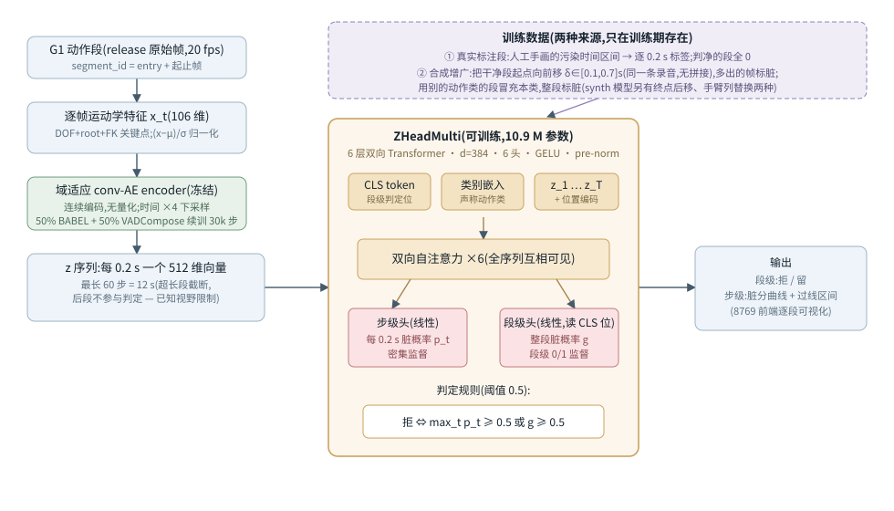
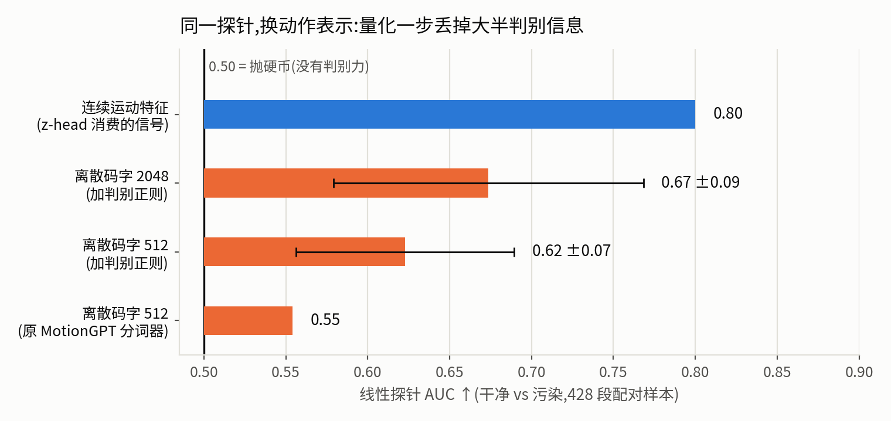
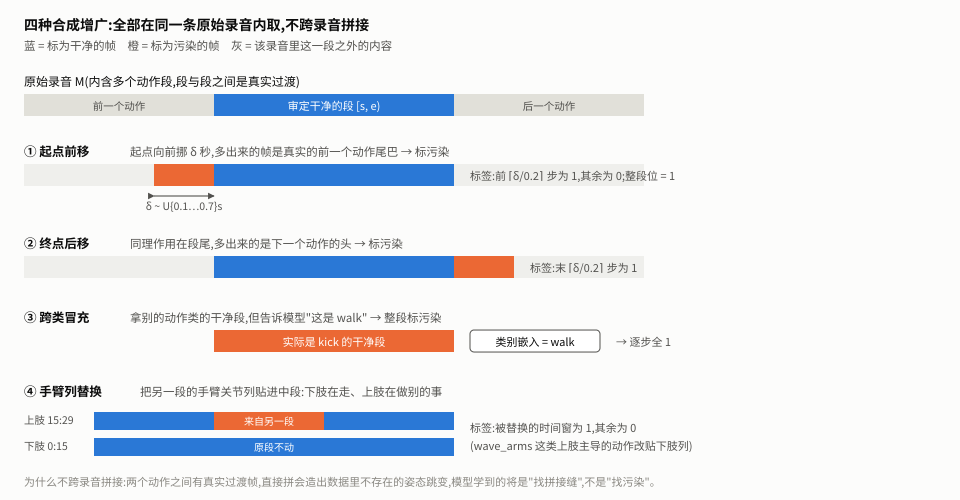
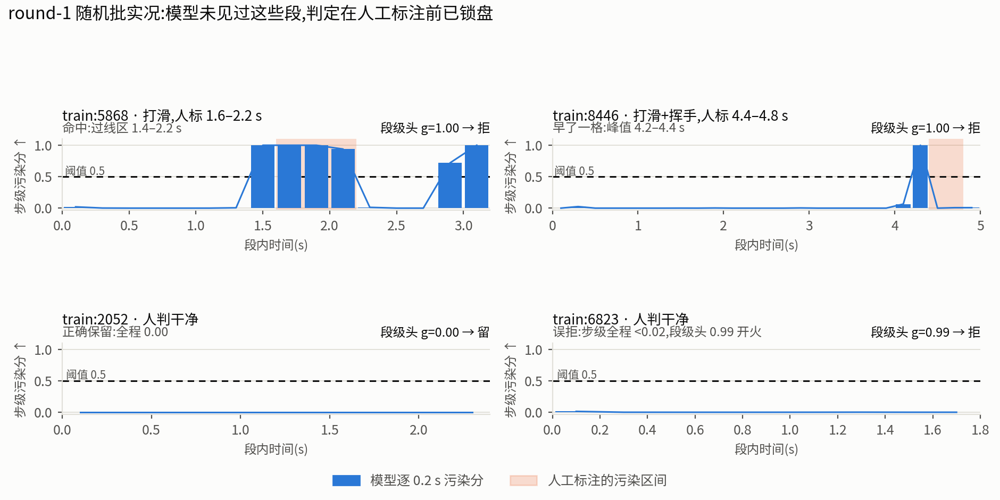
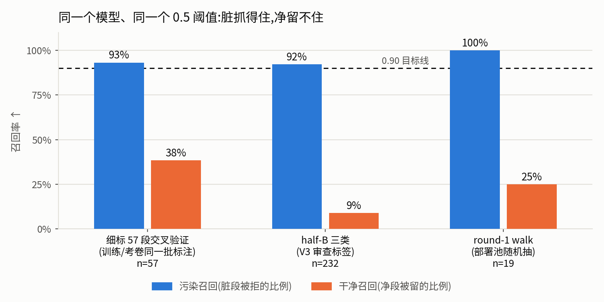

Generated from Markdown source: report/G1_MotionGPT/2026-08-18-zhead-classifier-architecture-and-augmentation.md
G1 动作段判定器 z-head:架构、数据增广与实测效果
Preliminary。这一页讲清三件事:判定器长什么样(逐层结构与公式)、训练数据怎么造出来的 (四种合成增广及其标签规则)、它现在到底判得怎么样(三个评测集 + 逐段实况)。目标任务是 从 28,081 段无人审查的机器人动作段里挑出真正干净的那部分。
Conclusion
FAIL(按"能否直接上岗清洗数据池"判)
- 抓污染这一半已经成立:三个评测集上污染召回 87%–100%,其中一个是部署池随机抽样、判定在 人工标注前锁盘(实况图)。
- 留干净这一半没成立:干净召回 9%–38%,真干净的段大批被拒。以现在的操作点清洗数据池, 留下的量和纯度都不可用。
- 判别信息本身不是瓶颈:同一个线性探针在连续运动特征上 AUC 0.80,在离散码字上只有 0.55–0.67(阶梯图)——这是判定器不接语言模型、 直接消费连续编码的原因。
- 当前做法:从数据池随机抽样,先让模型判、人再标,标完并入训练滚下一轮 (滚动流程)。round-1 的 walk 已跑完一轮。
Problem and terminology
研究问题:给定一段动作和它声称的动作类别(如"这是 walk"),判定这一段是否只包含该动作、 不含前后动作的残留或其他污染,并指出污染在哪一段时间。
| Term | 本页 operational definition | Scope / not to confuse with |
|---|---|---|
| 段(segment) | 一条原始录音里被切出的一小段动作,记作录音编号 + 起止帧;20 fps | 不是整条录音 |
| 声称动作类 | 数据集自带的动作标注(walk/kick/…),作为条件输入给模型;推理时总是已知 | 模型不预测动作名 |
| 污染(dirty) | 该段里出现了标称动作以外的内容:前后动作的残留、同时进行的其他动作、或执行本身失败(打滑、抖腿) | 与"动作做得美不美"无关 |
| z-head | 本页的判定器:冻结的连续编码器 + 可训练 6 层双向 Transformer(10.9 M 参数),输出逐 0.2 s 污染概率与整段污染概率 | 代码类名 ZHeadMulti;不含任何语言模型 |
| 步级头 / 段级头 | 两个线性输出层。步级头逐 0.2 s 出分,由人标的时间区间密集监督;段级头读 CLS 位出整段分,只有段级 0/1 监督 | 判定规则见 公式 (5) |
| 细标 57 段 | 带手画时间区间的标注集(walk 20 + kick 24 + wave_arms 22 减去弃用段);walk 由本项目作者标注,kick/wave_arms 由协作标注者标注 | ckpt 名 zhead_hansonly 是历史命名,并非"全部出自一人" |
| half-B | 训练 split 按录音分组对半后留作评测的一半(885 段,本页取三类共 232 段);标签来自更早的 V3 审查流程,含"看过但没打标 = 判脏"的折算 | 与细标 57 段是两批不同标注,判定尺度不完全一致 |
| round-1 | 从 28,081 段无人审查的段里随机抽 20 段/类;模型判定在人工标注前写盘锁定,标完即当轮成绩单 | 目前只有 walk 标完(19/20) |
| 污染召回 / 干净召回 | 污染召回 = 真污染中被拒的比例↑;干净召回 = 真干净中被保留的比例↑ | 两者必须一起看;只看准确率会被评测集的污染比例抬高 |
Method: classifier architecture

第一步:逐帧特征。 每帧取 106 维运动学量,全部是可直接从关节角算出的物理量:
| 分块 | 维数 | 内容 |
|---|---|---|
| root_yaw_vel / root_lin_vel_xy / root_height | 1 / 2 / 1 | 转身角速度、水平速度、重心高度 |
| dof / dof_vel | 29 / 29 | 29 个关节角与角速度 |
| link_pos | 42 | 14 个连杆的三维位置(正运动学现算) |
| foot_contact | 2 | 左右脚触地 |
第二步:连续编码,不做量化。 一维卷积自编码器的编码器把 N 帧压成 T = ⌊N/4⌋ 个向量 (20 fps ÷ 4 = 每 0.2 秒一个),每个 512 维:
结构是 1 层 3×1 卷积升到 512 通道,2 层步长 2 的卷积各降一半时间分辨率,2 个残差块,最后 1×1 卷积出 512 维。φ 在判定训练和推理中全程冻结;它先在 BABEL 动作库上训练,再用 50% BABEL + 50% 本数据池的窗口继续训 30k 步做域适应。T ≤ 60 是硬截断,超过 12 秒的段 后半部分不参与判定(已知限制)。
第三步:双向 Transformer 读整段。 序列前面拼两个特殊位——一个整段判定位、一个声称 动作类的嵌入向量:
(3) h = TransformerEncoder6 层, 6 头, pre-norm(h(0))
其中 a 是声称动作类,e(·) 是类别嵌入,W 把 512 维投到模型宽度 384,pt 是可学的 位置编码。双向的意思是每一步都能看到整段的前后文——判断"这 0.2 秒是不是残留",本来就需要 知道它前后在发生什么。
第四步:两个输出头。
g = σ(wseg⊤ h1) (整段污染概率,读 CLS 位)
损失。 步级用逐步二元交叉熵(只在非填充位上算),段级同样,权重 λ = 0.5:
BCE(p, y) = −[ y log p + (1−y) log(1−p) ]
yt ∈ {0,1} 是第 t 个 0.2 秒是否落在人标的污染区间内,Y 是段级标签。
为什么编码器不量化
原来的路线是 MotionGPT 式的:动作先量化成离散码字,再喂给语言模型,判定从生成的文本里读。 把同一个线性探针分别架在不同表示上,判别力差距如下:

量化这一步就丢掉大半判别信息;扩码本(512 → 2048)只挽回一点。此外语言模型的训练目标里 从来没有"判干净还是脏"这一项。两者叠加,那条路线的判定准确率长期停在 0.6 附近。z-head 的做法是直接消费公式 (1) 的连续 z,绕开量化和文本。
Method: data augmentation
人工标注只有一百多段,不足以训练。合成增广提供大部分训练样本,四种形式全部在同一条原始 录音内部取材,不跨录音拼接:

设一条录音 M 里有一个审定干净的段 [s, e),20 fps。四种构造与标签:
| 形式 | 构造 | 逐步标签 y | 段级 Y |
|---|---|---|---|
| ① 起点前移 | 取 M[s−⌈20δ⌉ : e),δ ~ U{0.1,…,0.7} 秒,每段抽 2 个 δ | 前 ⌈δ/0.2⌉ 步为 1,其余 0 | 1 |
| ② 终点后移 | 取 M[s : e+⌈20δ⌉) | 末 ⌈δ/0.2⌉ 步为 1,其余 0 | 1 |
| ③ 跨类冒充 | 取另一类的干净段,类别嵌入填成本类 | 全 1 | 1 |
| ④ 手臂列替换 | x[t, 15:29] ← xB[t, 15:29],t ∈ [t₀, t₁) | 区间内 1,区间外 0 | 1 |
为什么不跨录音拼接。 两个动作之间有真实的过渡帧;直接把 A 的尾巴接到 B 的头上会造出 数据里根本不存在的姿态跳变。模型能学会找那个跳变,但那不是它要判的东西——部署时遇到的是 真实录制的连续动作。前移/后移取到的多余帧就是这条录音里真实的前后动作,连过渡一起带进来。
第 ④ 种的部位选择按类分工:走路类贴手臂列(模拟下肢在走、上肢在做别的); 挥手这类上肢主导的动作反过来贴下肢列。这个分工是 A/B 对比选出来的,不是先验设定。
Results: the model in action
下面四段来自 round-1:从 28,081 段无人审查的段里随机抽出,模型的判定和逐步曲线在人工 标注之前就已写盘锁定。横轴是段内时间,蓝柱是模型逐 0.2 秒的污染分,橙色区间是人后来标的。

- 左上是最有说服力的一例:人写的备注是"打滑,1.6–2.2 秒",模型的过线区间 1.4–2.2 秒。 打滑发生在段落中间,不能用"总是怀疑开头"来解释。
- 右上判对了段但位置偏早一格(峰值 4.2–4.4 秒,人标 4.4–4.8 秒)。
- 右下是当前最典型的失败:步级曲线全程低于 0.02,段级头单独给了 0.99 把段拒掉。按公式 (5), 两个头任一过线即拒,所以这段被误杀。
三个评测集上的成绩

| 评测集 | n | 污染占比 | 准确率↑ | 污染召回↑ | 干净召回↑ | 全拒基线 |
|---|---|---|---|---|---|---|
| 细标 57 段(5 折交叉验证) | 57 | 77% | 0.807 | 93% | 38% | 0.772 |
| half-B 三类(V3 审查标签) | 232 | 71% | 0.681 | 92% | 9% | 0.711 |
| round-1 walk(部署池随机抽) | 19 | 79% | 0.842 | 100% | 25% | 0.789 |
三个数都要对着"全拒基线"读:一个把所有段都判脏的常数判定器,在这些评测集上准确率就有 0.71–0.79,因为这些集合本身脏占多数。模型超出基线的部分很薄,half-B 上甚至低于基线。
为什么"留下的都是干净的"这么难
设某类共有 N净 段干净、N脏 段污染,干净召回 R净、 污染召回 R脏,则被留下那一堆里真干净的比例是:
代入 half-B 的 walk(15 段干净、100 段污染)看看目标有多远:要在保住 90% 干净段 (R净 = 0.9)的同时让留下的堆达到 90% 纯度,解 (8) 得 R脏 = 98.5%。 底子越脏,对污染召回的要求越苛刻——这也是把"判脏"做到 100% 仍不够用的原因。
滚动补数据的流程
现在每一轮做四件事:从无人审查的池子里随机抽 20 段/类 → 模型判定写盘锁定 → 人工标注 (标注界面直接显示逐步曲线,便于分析失败模式)→ 标注并入训练集重训,再抽下一轮。这样 每轮的模型判定都是在真实部署分布上、标注之前给出的,不需要另外准备考卷。
Analysis
- 测量:污染召回在三个评测集稳定在 87%–100%,干净召回 9%–38%(主表)。失败集中在留侧, 且 half-B 上准确率低于全拒基线,说明当前模型倾向于大面积判脏。
- 测量:剪除人标的段首污染后重新判定,walk 4 段中 3 段警报消失,连一个干净段上的误报也随之 消失;wave_arms 7 段中 5 段照样整段判脏。前者说明 walk 的警报跟着内容走,后者说明该类 的判定与标注位置无关。
- 测量:round-1 walk 的 4 例误拒里,1 例是段级头单独开火(实况图右下),其余是步级头自己
对夸张但合格的走姿开火。去掉段级头在 round-1 多留对 1 段、在 half-B 少抓 4 段污染,
是一换一的取舍,
待验证。 - next:round-1 剩余两类标完后并入重训,再抽 round-2;届时重跑同一套评测,看干净召回是否 随干净样本增加而抬升。
Appendix
头条数字的代入式与证据路径
- 纯度公式代入(half-B walk,N净=15、N脏=100): 0.9 = 0.9·15 / (0.9·15 + (1−R脏)·100) ⟹ 13.5 = 12.15 + 90(1−R脏) ⟹ R脏 = 0.985。当前操作点 R净=1/15、R脏=0.87, 纯度 = 1/(1+13) = 0.071。
- 细标 57 段 0.807 = (41 拒对 + 5 留对)/57;
outputs/g1_motiongpt/hans_only_cv.json - half-B 0.681 = (152+6)/232;
outputs/g1_motiongpt/hans_only_vs_synth_halfb.json - round-1 walk 0.842 = (15+1)/19;
outputs/g1_motiongpt/rolling/round1_walk_scoreboard.json(19/20 段已标;判定列曾被标注界面默认值污染,修正记录见该文件 spec 字段) - 线性探针 AUC:连续特征 0.800 / 原分词器码字 0.554 / 判别正则码字 512 0.623±0.067 /
码字 2048 0.674±0.095;
outputs/probe_tokenizer_disc_acceptance/evidence.json、outputs/probe_tokenizer_disc_cb2048_acceptance/evidence.json - 剪段首因果探针:
outputs/g1_motiongpt/head_crop_probe.json; 判定规则消融:outputs/g1_motiongpt/zhead_rule_decomposition.json - 逐段曲线:
outputs/g1_motiongpt/rolling/round1_blind.json(round-1,标注前锁盘)、outputs/g1_motiongpt/hans_only_cv_curves.json(交叉验证)
训练配方
| 合成样本模型 | 细标模型(本页主角) | |
|---|---|---|
| 训练数据 | 每类数百条合成样本,类平衡采样;不含任何真实污染段 | 57 段真实标注 + 由其中 13 段判净的段生成的 29 条合成样本 = 86 条 |
| 步数 | 3000,10% 留出早停(不早停实测过拟合) | 600 固定 |
| batch / 学习率 | 64 / 3e-4 | 32 / 3e-4 |
| 共同项 | AdamW(权重衰减 0.01)、bf16、梯度裁剪 1.0、损失见公式 (6)、编码器冻结、随机种子 20260814 | 同左 |
编码器域适应:50% BABEL + 50% 本数据池窗口,学习率 5e-5,30k 步;
产物 logs/g1_motiongpt/continuous_vae_vadc/continuous_vae.pt。
已知限制
- 输入截断:公式 (1) 的 T ≤ 60,即只判前 12 秒。已遇到实例:某段人标的污染在 13.0–13.4 秒, 模型看不到。
- 覆盖范围:目前只训了 walk / kick / wave_arms 三类;其余类别调用会返回"不覆盖"。
- 评测集之间标注尺度不同:细标 57 段与 round-1 是带时间区间的细粒度标注,half-B 用的是更早 的 V3 审查标签(含"看过但没打标 = 判脏"的折算),两者判定尺度不完全一致。
- round-1 起,标注界面会显示模型的逐步曲线(为分析失败模式而加),因此人工标注不再是完全 独立的;各轮模型判定仍在标注前写盘锁定。
Run Spec 与复现
NOT PREREGISTERED — 本设计线没有单一确认版 Run Spec。已搜索:docs/plans/、
outputs/g1_motiongpt/*/evidence.json、report/G1_MotionGPT/。逐次测量的探针级 spec
内嵌在上述各 evidence 文件中;各次训练与评测均在会话中逐项确认后执行。
# 合成样本模型
uv run python src/G1_Motion_GPT/train_zhead_multi.py --balanced --paste arms \
--cae logs/g1_motiongpt/continuous_vae_vadc/continuous_vae.pt --tag synth
# 本页三张图
uv run --with matplotlib python report/G1_MotionGPT/assets/make_zhead_figures.py
细标模型(logs/g1_motiongpt/zhead_hansonly/zhead.pt)由会话内联脚本训练,配方见上表。